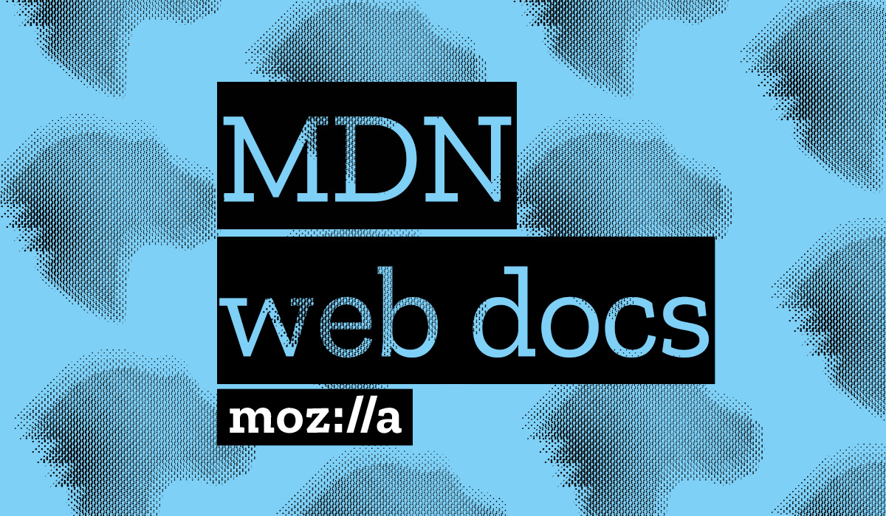
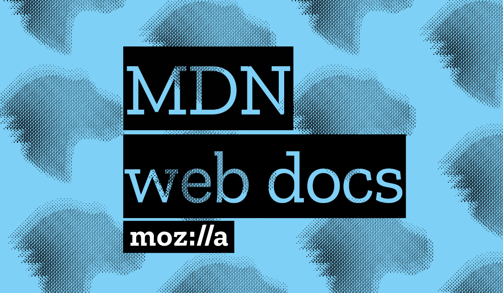

Summary
- Intro
- Some history
- MONEY MONEY MONEY
- Mozilla Manifesto principles
- Internet Health
- Why Mozilla? Resources and mission today
- Founded in 2003
- Leading the open source Mozilla project
- Mozilla Corp. ownage (coordinates work of Mozilla Firefox web browser and Mozilla Thunderbird email client, writes the world's most referenced web developer site. MDN)

 

- Initial funding in 2003 came from AOL - US$2 million
- Donations and 2% of annual net revenues from the Mozilla Corporation (US$8.3 million in 2016)
- US$61.5 million from Google in 2006 for being the default search engine in the Mozilla web browser
Mozilla Corporation functions as a self-sustaining social enterprise – money earned through its products is reinvested into the organization.
Principle 1 The internet is an integral part of modern life—a key component in education, communication, collaboration, business, entertainment and society as a whole.
Principle 2 The internet is a global public resource that must remain open and accessible.
Principle 3 The internet must enrich the lives of individual human beings.
Principle 4 Individuals’ security and privacy on the internet are fundamental and must not be treated as optional.
Principle 5 Individuals must have the ability to shape the internet and their own experiences on it.
Principle 6 The effectiveness of the internet as a public resource depends upon interoperability (protocols, data formats, content), innovation and decentralized participation worldwide.
Principle 7 Free and open source software promotes the development of the internet as a public resource.
Principle 8 Transparent community-based processes promote participation, accountability and trust.
Principle 9 Commercial involvement in the development of the internet brings many benefits; a balance between commercial profit and public benefit is critical.
Principle 10 Magnifying the public benefit aspects of the internet is an important goal, worthy of time, attention and commitment.
Principle 2 The internet is a global public resource that must remain open and accessible.
Principle 3 The internet must enrich the lives of individual human beings.
Principle 7 Free and open source software promotes the development of the internet as a public resource.
Principle 9 Commercial involvement in the development of the internet brings many benefits; a balance between commercial profit and public benefit is critical.
Internet Health Keyfeatures
- Privacy & Security
- Openness
- Decentralization
- Digital Inclusion
- Web Literacy
- Not-for-profit status: moz org is nonprofit org and the sole owner of the Firefox organization. Firefox and Mozilla are trusted global social brands.
- 300 million+ Firefox users across the globe.
- Open source values: long-standing commitment to transparency and participation
- Social enterprise revenue: Approximately $10 million of Firefox’s annual revenue is invested into the Foundation, providing a solid base to grow a larger movement building fund.
The direct work of the Mozilla Foundation focuses on ensuring the internet always remains a global public resource that is healthy, open, and accessible to all.